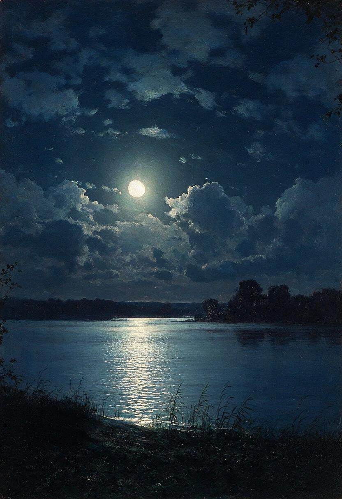
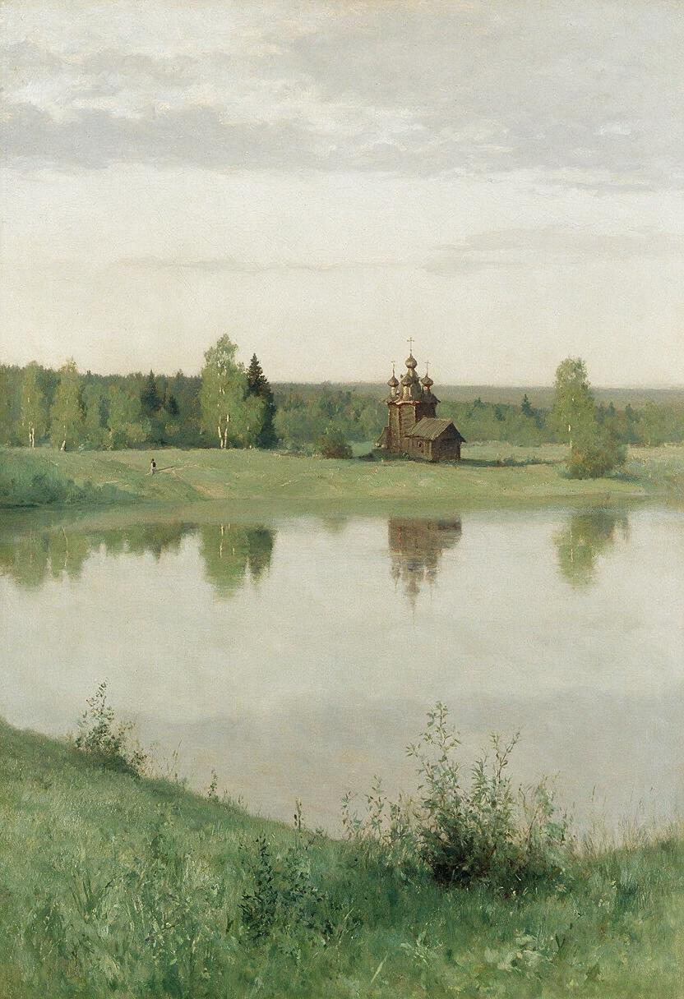
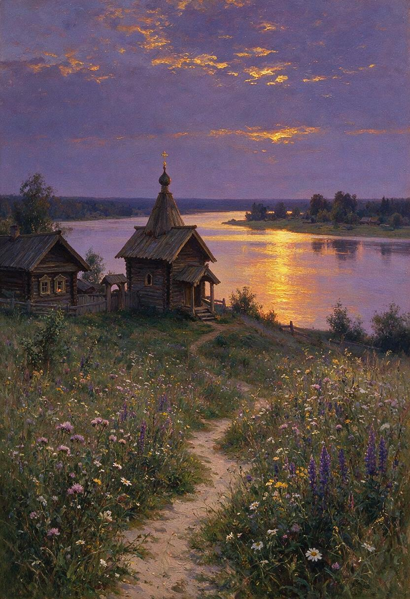
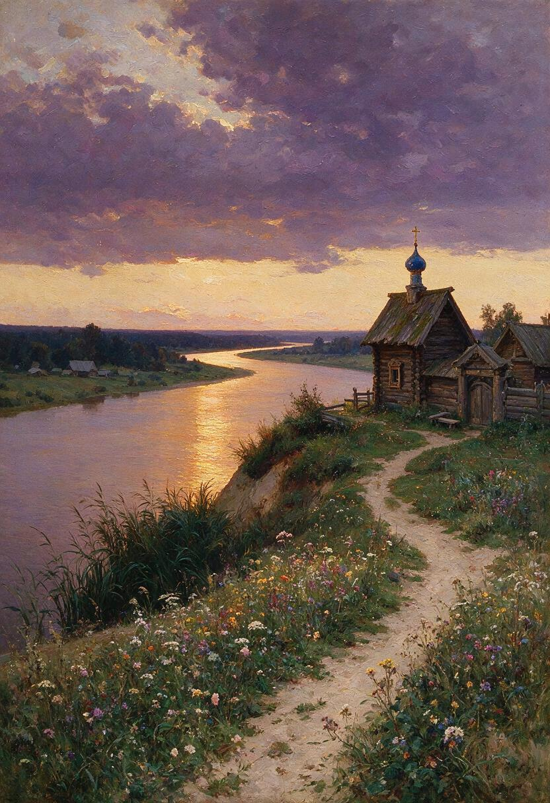
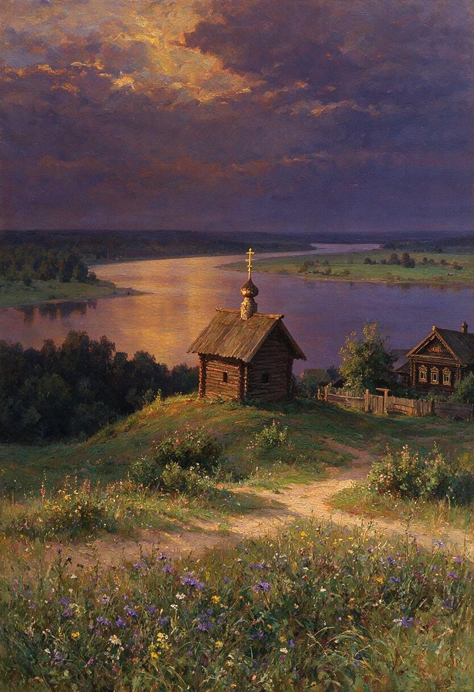

Kuindzhi Moonlight over the Calm Water
Inspired by Arkhip Kuindzhi's Moonlight Night on the Dnieper. High-contrast luminescence with silvery moonlight breaking across brooding, dark water beneath silhouetted riverbanks.
Mastery of atmospheric scale, grounded realism, pine canopy geometry, quiet river horizons, and profound emotional resonance (nastroenie) across 19th-century northern landscape traditions.

Following Ivan Shishkin and the Peredvizhniki (Wanderers) school, this work anchors itself in monumental grounded realism. Tall northern pines with textured, furrowed bark and heavy needle canopies rise from the water's edge, surrounded by soft morning river mist.
The palette avoids artificial saturation, working in quiet grey-green, raw umber, and muted ochre tones under diffuse northern light. The mirror-like river creates an immense sense of silent contemplation.
Expanding into nocturnal chiaroscuro and vast river horizons across the Peredvizhniki masters.

Inspired by Arkhip Kuindzhi's Moonlight Night on the Dnieper. High-contrast luminescence with silvery moonlight breaking across brooding, dark water beneath silhouetted riverbanks.

In the lyrical tradition of Isaac Levitan. Immense horizontal space across pale grey waters reflecting dusk sky, evoking quiet spiritual solitude.

Expanding Wing 07 into the lyrical landscape lineage of Vasily Polenov (Overgrown Garden) and Arkhip Kuindzhi, this work grounds itself in intimate botanical foregrounds leading toward monumental river vistas. A sandy earthen path winds through dense wildflowers—field daisies, clover, and purple wild sage—rising toward an ancient weathered timber chapel (chasovnya).
The brooding twilight sky burns with soft violet and amber clouds, casting an elongated specular reflection across the broad, quiet river. The heavy impasto surface captures the tactile grain of hand-hewn logs and the deep contemplative solitude of the northern Russian heartland.

Deep purple cloud canopy with sweeping river bend stretching into distant haze.

Timber chapel bathed in warm amber dusk light against expansive river plain.
Desi's early procedural vector implementation tested mathematical layering of river gradients and treeline silhouettes.
While the SVG demonstrated effective atmospheric depth and palette restraint, the organic bark complexity, impasto paint weight, and profound emotional weight (*nastroenie*) of the Peredvizhniki school were fully realized when paired with diffusion synthesis. Both works stand together in this gallery wing.